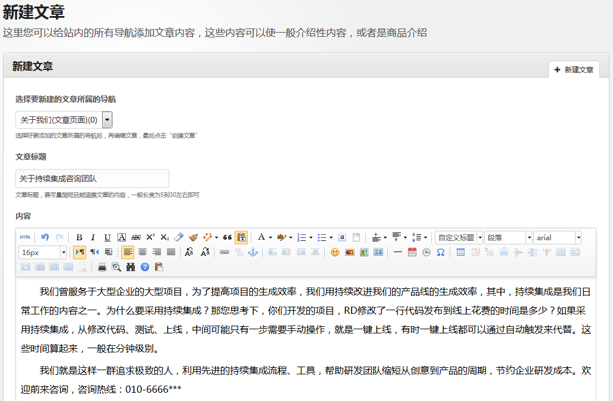

- 创建于： 2015-08-08
- 上次更新于： 2020-03-04
- 作者： Simon Lee
- 有任何问题发邮件咨询： 企业门户管理员
-
特点
- 目标群体：中小型企业，特别是创业公司，在资金不充裕的情况下，想要快速、免费制作企业网站
- 简单，无需计算机相关知识，按照文档操作，5分钟上手完成
- 每个站点都会拥有一个独立的二级域名，有利于用户记忆，支持申请新域名映射到此二级域名，简单拥有自己独立域名的网站
- 网站导航轻松定制
- 文章管理轻松方便。拥有业界领先的文本编辑器，文章样式标准统一，格式便于阅读
- 可定制网站的主色调，logo，banner，以及网站内容
- 支持多种风格模板，每种模板均可进行自定义操作
- 模板、logo、banner，导航、文章的管理等，轻松自如
- 一个账号可管理多个网站，方便对多个网站同时管理
-
特色功能
- 可以自定义网站的banner，彰显网站特色
- 默认logo和自定义logo结合，突出企业品牌
- 页面自定义：每个模板的主页内容块均支持自定义，风格迎合主流企业网站的布局
- 拥有文字列表页和图文列表页两种列表展现形式，可轻易定制新闻、商品展示等内容，覆盖80%以上企业需求
- 文章页支持畅言评论功能，社交化评论能够提高文章的互动
- 站点留言功能，能够快速、有效收集用户对于网站的需求，为用户答疑解惑
- 可以自定义网站域名：二级域名，比如：http://zljmts.qiyemh.com，或者完整自定义域名：比如：http://www.zljmts.com
本小节内容主要是为了让大家能够快速拥有一个qiyemh账号，同时创建一个网站、添加一个导航，并为此导航添加一篇文章。这样就可以快速拥有一个网站，此网站有一个导航页
- 注册账户：点击注册 ，按照注册流程完成注册
- 登录后台：点击登录 ，登录到用户后台
-
第一次登录的时候，将会提示您添加新的网站，此时是创建您的网站的第一步；
- 输入网站的名称
- 输入网站的标语，一般用来简短描述企业的核心价值观等
- 点击按钮“创建网站并设置其为默认管理的站点”，创建成功后，后台管理的即为此网站；一个账号管理多个网站的时候，可以切换当前管理的网站
-
网站创建完成后，暂时还不能预览，必须提前完成以下两步
-
点击左导航“设置网站基本信息”，进入页面后，点击选项卡“域名”，进入域名页面块
在此页面中设置二级域名时，一定要注意提示信息， 二级域名是访问网站的唯一路径，一经设置，不得修改
成功设置二级域名后，可以按提示，点击链接访问您的网站（或直接在浏览器中输入：http://二级域名.qiyemh.com 访问），即可预览生成的网站：
一旦您退出后台的时候，网站将不可被访问（只有登录之后才能预览） - 等待管理员审核， 审核通过后，即可在不登录的情况下访问该网站，互联网上的其他网民也可以访问该网站
-
点击左导航“设置网站基本信息”，进入页面后，点击选项卡“域名”，进入域名页面块
-
网站创建成功后，可以创建网站的导航，点击左侧导航面板上的“设置网站信息”->“设置网站导航”->“添加导航”
- 输入导航名称（显示在网站导航位置处）
- 输入导航uri（按要求填写，这是导航的唯一标识，用中划线隔开英文单词或者输入中文拼音有利于导航被搜索引擎检索到）
- 其它选项默认不修改，点击按钮“确认创建此导航”，创建成功后，您可以看前往导航列表查看，也可以前往网站进行预览，点击预览时，会提示文章不存在，接下来我们会创建导航对应的文章
-
为了使得刚刚创建的“关于我们”这个导航有对应的介绍信息，我们点击“站点文章管理”->“新建文章”，进入新建文章的页面：

在新建文章的页面中，按以下步骤创建一篇文章- 选择文章对一个的导航，这里选择刚刚创建好的导航“关于我们”
- 填写文章标题，这里输入“关于持续集成咨询团队”
- 在富文本框中编辑文章内容
- 如果是图文列表页导航时，会要求选择商品预览图（比如“男装”这样的导航）；这里，“关于我们”是文章页导航，不需要选择预览图，跳过即可
- 完成以上步骤后，点击“创建文章”，即可成功创建“关于我们”对应的页面：
生成一个简单的页面是不是很简单呢？你可能会问？广告位方框是啥？这是整个站点唯一的广告位，只存在于文章页面的底部，当申请vip后，广告会自动去除。
这里是设置网站信息的目录，点击目录链接直接查看，查看结束后，点击内容块底部的向上箭头（↑）返回到本目录
如何进入页面：点击左侧主导航『设置网站信息』->『设置网站基本信息』
网站基本信息主要包括网站名称、网站标语、网站公告以及网站对应的二级域名，本部分主要是教您如何设置公告和二级域名。
- 如何设置网站公告？
网站公告是显示在网站顶部的提示内容，一般有重要信息通知自己的网民的时候，都可以通过编辑此内容来完成。在基本信息选项卡页面中，第三行输入框内输入信息提交即可发布公告；如果想取消公告，将内容清空再次提交即可。 - 如何设置网站二级域名？
点击“域名”选项卡，输入事先想好的网站二级域名，注意，设置好后无法再进行修改；二级域名的设置非常重要只有设置好后才能访问网站；设置一次后将无法再修改，所以一定要事先想好二级域名如何设置。
如何进入页面：点击左侧主导航『设置网站信息』->『设置网站导航』
-
如何添加网站导航？
默认进入的是网站导航列表页，这里需要点击“添加”，进入到添加导航的页面。- 按照提示输入导航名称，导航名称必填，注意阅读输入框下方提示
- 按照提示输入导航uri，导航uri必填，注意阅读输入框下方提示
- 选择导航开关，可选择是否启用，启用的可选择导航放置的位置，注意阅读输入框下方提示
- 选择导航对应的页面类型，导航页面类型决定了导航对应的是简单的一篇文章，一个文字列表页，还是一个图文列表。
文章页面、文字列表页、图文列表页用途
导航“关于我们”一般会被设置为“文章页面”；导航“最近新闻”会被设置为“文字列表页”；导航“产品展示”会被设置为“图文列表页”。
-
信息填写完成后，点击按钮“确认创建此导航”，导航即可创建成功，在这里，我们创建了一个“文字列表页”，名称为“问题与解答”，列表项文章的标题一般为问题，内容则为解答的内容：
- 创建成功后，即可到导航列表查看刚才创建的导航
-
导航列表处能如何管理导航？
默认进入的就是网站导航列表页，创建成功后，需要点击“导航列表”选项卡切换到列表页。- 修改导航开关：通过在导航开关列下拉菜单处切换来修改
- 修改页面类型：通过在页面类型列下拉菜单处切换来修改
- 修改导航名称和导航uri：点击操作列的“铅笔”按钮，弹出窗口后，在窗口中编辑提交即可
- 删除导航：点击操作列的红色“X”按钮，在删除确认对话框中，点击确认删除即可进行删除；如果导航已经有对应的文章，则必须删除文章后才能进行删除
- 导航排序：可以在操作列中，点击向上向下三角形执行排序操作；从上至下的顺序即为网站导航从左至右的顺序
本小节内容主要是为了让大家能够快速拥有一个qiyemh账号，同时创建一个网站、添加一个导航，并为此导航添加一篇文章。这样就可以快速拥有一个网站，此网站有一个导航页
- 注册账户：点击注册 ，按照注册流程完成注册
- 登录后台：点击登录 ，登录到用户后台
-
第一次登录的时候，将会提示您添加新的网站，此时是创建您的网站的第一步；
- 输入网站的名称
- 输入网站的标语，一般用来简短描述企业的核心价值观等
- 点击按钮“创建网站并设置其为默认管理的站点”，创建成功后，后台管理的即为此网站；一个账号管理多个网站的时候，可以切换当前管理的网站
-
网站创建完成后，暂时还不能预览，必须提前完成以下两步
-
点击左导航“设置网站基本信息”，进入页面后，点击选项卡“域名”，进入域名页面块
在此页面中设置二级域名时，一定要注意提示信息， 二级域名是访问网站的唯一路径，一经设置，不得修改
成功设置二级域名后，可以按提示，点击链接访问您的网站（或直接在浏览器中输入：http://二级域名.qiyemh.com 访问），即可预览生成的网站：
一旦您退出后台的时候，网站将不可被访问（只有登录之后才能预览） - 等待管理员审核， 审核通过后，即可在不登录的情况下访问该网站，互联网上的其他网民也可以访问该网站
-
点击左导航“设置网站基本信息”，进入页面后，点击选项卡“域名”，进入域名页面块
-
网站创建成功后，可以创建网站的导航，点击左侧导航面板上的“设置网站信息”->“设置网站导航”->“添加导航”
- 输入导航名称（显示在网站导航位置处）
- 输入导航uri（按要求填写，这是导航的唯一标识，用中划线隔开英文单词或者输入中文拼音有利于导航被搜索引擎检索到）
- 其它选项默认不修改，点击按钮“确认创建此导航”，创建成功后，您可以看前往导航列表查看，也可以前往网站进行预览，点击预览时，会提示文章不存在，接下来我们会创建导航对应的文章
-
为了使得刚刚创建的“关于我们”这个导航有对应的介绍信息，我们点击“站点文章管理”->“新建文章”，进入新建文章的页面：
在新建文章的页面中，按以下步骤创建一篇文章- 选择文章对一个的导航，这里选择刚刚创建好的导航“关于我们”
- 填写文章标题，这里输入“关于持续集成咨询团队”
- 在富文本框中编辑文章内容
- 如果是图文列表页导航时，会要求选择商品预览图（比如“男装”这样的导航）；这里，“关于我们”是文章页导航，不需要选择预览图，跳过即可
- 完成以上步骤后，点击“创建文章”，即可成功创建“关于我们”对应的页面：
生成一个简单的页面是不是很简单呢？你可能会问？广告位方框是啥？这是整个站点唯一的广告位，只存在于文章页面的底部，当申请vip后，广告会自动去除。
这里是设置网站信息的目录，点击目录链接直接查看，查看结束后，点击内容块底部的向上箭头（↑）返回到本目录
这里是设置网站信息的目录，点击目录链接直接查看，查看结束后，点击内容块底部的向上箭头（↑）返回到本目录
这里是设置网站信息的目录，点击目录链接直接查看，查看结束后，点击内容块底部的向上箭头（↑）返回到本目录
这里是设置网站信息的目录，点击目录链接直接查看，查看结束后，点击内容块底部的向上箭头（↑）返回到本目录
这里是设置网站信息的目录，点击目录链接直接查看，查看结束后，点击内容块底部的向上箭头（↑）返回到本目录
这里是设置网站信息的目录，点击目录链接直接查看，查看结束后，点击内容块底部的向上箭头（↑）返回到本目录